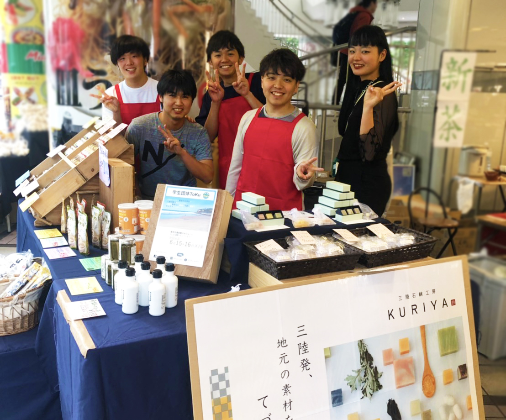
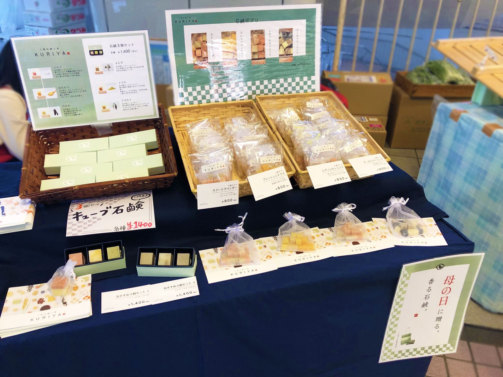
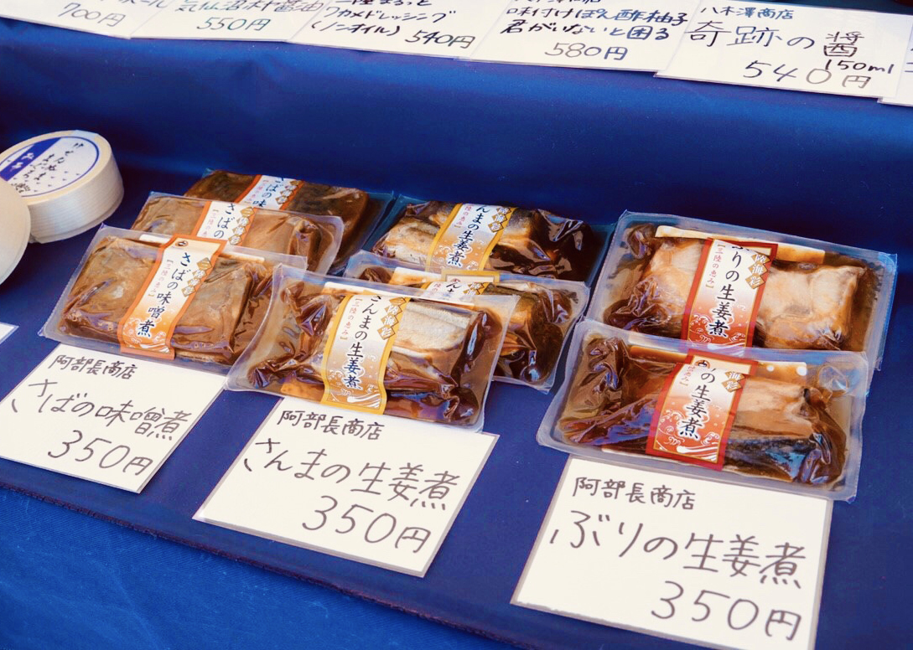
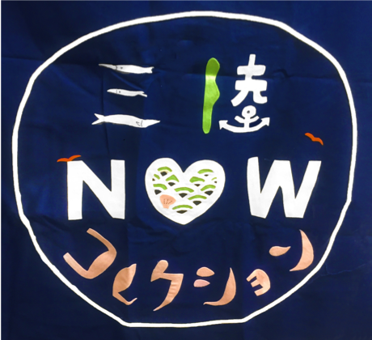

三陸なう
コレクション
三陸なう
コレクション
マルシェ
sanrikunow marche
こんにちは。マルシェ部会長の川面です。
今回は、三陸なうマルシェ企画「三陸なうコレクション」をご紹介します。
今年のマルシェのキャッチコピーは「三陸が日常に」です。
三陸なうのマルシェでは、普段の交通会館マルシェよりも
商品の種類を増やし、様々な自治体・事業所の商品を取り扱う予定です！

ごはんのおかずやお酒のおつまみ、
ちょっとしたおやつや日常的に使える雑貨など、
幅広いジャンルの商品を用意します。
前からあったけど東京にはなかなか出てこない商品や、
生まれたばかりの新しい商品など、
目新しい商品も多数取り扱います。


商品そのものだけでなく、いろいろな切り口から
「三陸地方が自然と身近な存在に」なるような仕掛けを用意し、
三陸地方が大好きな人はもちろん、
三陸地方ってどこ？という人にも、
「良い体験だった！」
と思ってもらえるようなマルシェを目指していきます！
普段の生活で三陸との関わりがある人もない人も
この企画を体験してくれた全ての人にとって、
三陸がより身近な存在になればうれしいです！
今年の「三陸なうコレクション」にご期待ください！

| 〈昨年度の主な販売商品〉 |
|---|
| ・さんまくん（マルトヨ食品） |
| ・椿茶（バンザイファクトリー） |
| ・気仙沼帆布で作られた雑貨（GANBAARE） |
+マルシェ閉店しました☺️
— 学生団体ToKu (@ToKu_withus) October 27, 2019
今日が今年最後の出店となります。
ご来店いただいたみなさま
ありがとうございました🙇♀️
12月には三陸なうを開催しますので、
そちらもぜひお楽しみに✨ https://t.co/pvu5DL7oSO
続々更新中!
keep updating...